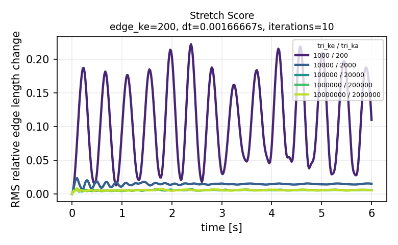
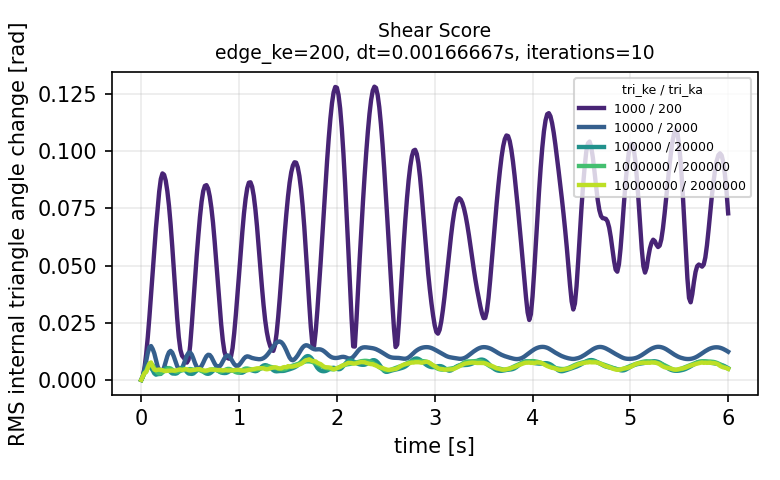
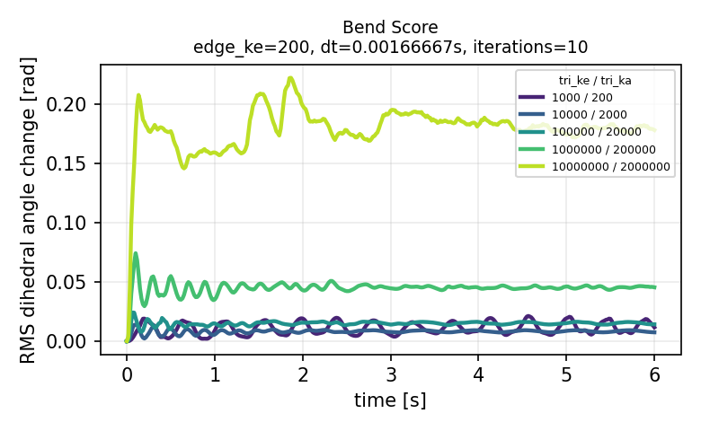

Pinned Bag Rigidity Sweep
Score Definitions
| score | definition | implementation detail |
|---|---|---|
stretch_score |
RMS relative edge length change. | For every unique triangle edge, compute (current_length - rest_length) / rest_length, then take RMS over all bag edges. |
shear_score |
RMS in-plane triangle distortion. | For each triangle, compute its three internal angle changes from the rest mesh, then take RMS over all triangle angles. Units are radians. |
bend_score |
RMS dihedral angle change. | For every pair of adjacent triangles sharing an edge, compute the change in angle between their face normals from rest, then take RMS. Units are radians. |
Five runs vary cloth_tri_ke and cloth_tri_ka over the listed absolute values while keeping cloth_tri_kd fixed at 0.1. The combined video shows the five recordings in one time-synced row.
Combined Video
Stretch Score

Shear Score

Bend Score

Score Summary
| cloth_tri_ke | cloth_tri_ka | score | final | peak | mean |
|---|---|---|---|---|---|
| 1000 | 200 | stretch_score | 0.110073 | 0.222441 | 0.106909 |
| 1000 | 200 | shear_score | 0.0728475 | 0.128237 | 0.0646225 |
| 1000 | 200 | bend_score | 0.0115948 | 0.0211959 | 0.0109638 |
| 10000 | 2000 | stretch_score | 0.0151857 | 0.0235364 | 0.0145503 |
| 10000 | 2000 | shear_score | 0.0123304 | 0.0168088 | 0.0111086 |
| 10000 | 2000 | bend_score | 0.0074385 | 0.0137271 | 0.00812223 |
| 100000 | 20000 | stretch_score | 0.00572417 | 0.00732748 | 0.00561428 |
| 100000 | 20000 | shear_score | 0.00511766 | 0.0104347 | 0.00572102 |
| 100000 | 20000 | bend_score | 0.0141702 | 0.0241625 | 0.0148596 |
| 1000000 | 200000 | stretch_score | 0.00541181 | 0.0078541 | 0.00545732 |
| 1000000 | 200000 | shear_score | 0.00491667 | 0.00834685 | 0.0060085 |
| 1000000 | 200000 | bend_score | 0.0453945 | 0.0741309 | 0.0448994 |
| 10000000 | 2000000 | stretch_score | 0.00535968 | 0.00825275 | 0.00559437 |
| 10000000 | 2000000 | shear_score | 0.00484987 | 0.00900776 | 0.00587751 |
| 10000000 | 2000000 | bend_score | 0.177943 | 0.222024 | 0.178704 |
Artifacts
Combined raw data: rigidity_scores_sweep.csv and rigidity_scores_sweep.json.
| cloth_tri_ke | cloth_tri_ka | video | csv | json |
|---|---|---|---|---|
| 1000 | 200 | video | csv | json |
| 10000 | 2000 | video | csv | json |
| 100000 | 20000 | video | csv | json |
| 1000000 | 200000 | video | csv | json |
| 10000000 | 2000000 | video | csv | json |